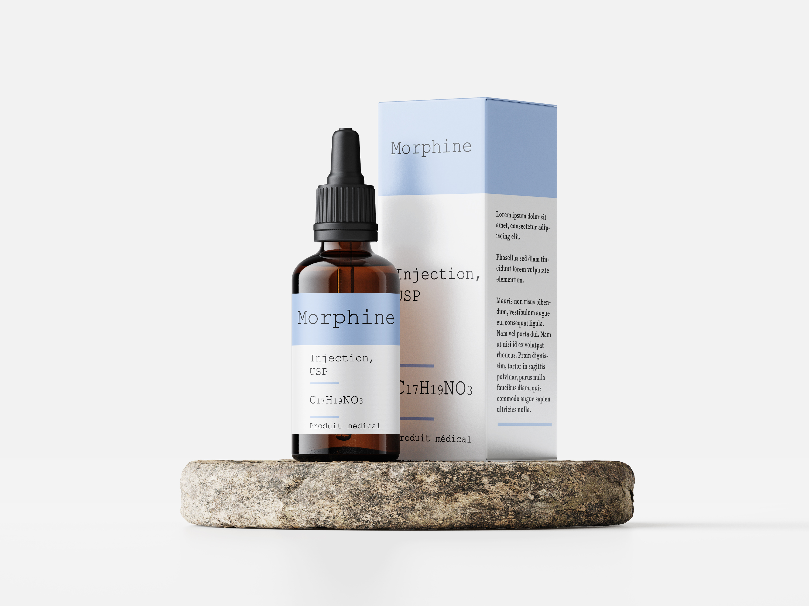
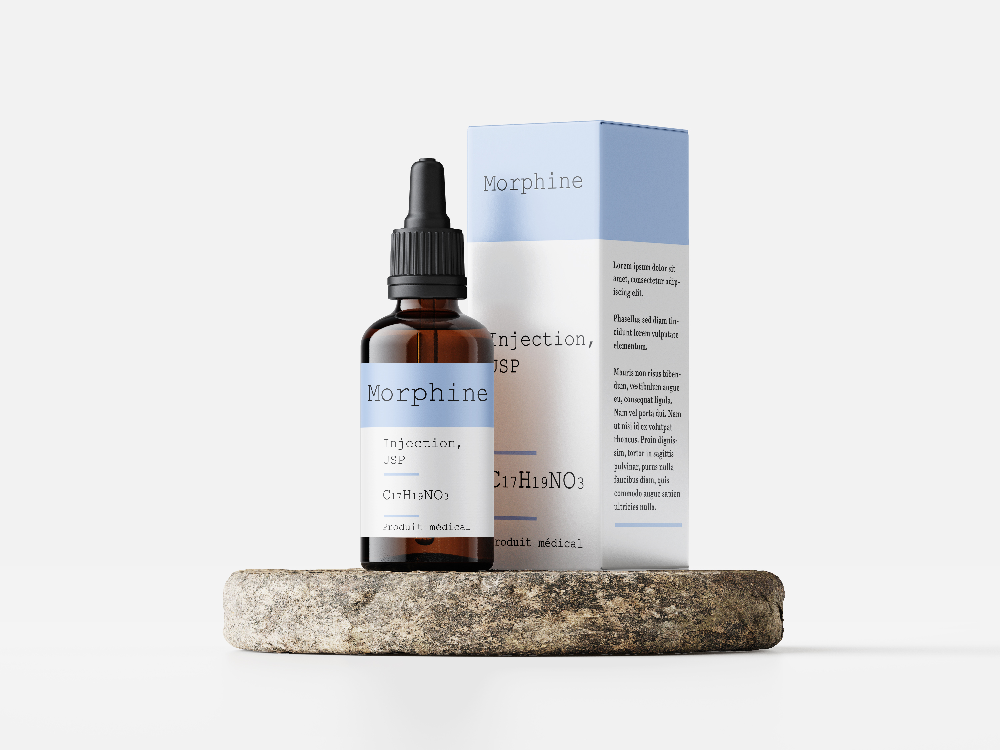

Lors de ma deuxième année d'études, j'ai décidé de m'engager dans le pôle communication du BDE (Bureau Des Elèves) de mon école, accompagné de mes amis. Mon rôle étant de gérer le compte instagram en matière de post mais aussi de questions/réponses avec les autres étudiants ayant besoin d'informations. Mais surtout, ce rôle consiste à créer des affiches faisant la promotion de divers évènement organisé par le BDE.
Contexte :
Certaines personnes souffrant de maladies ont besoin de s’injecter des produits médicaux pour se soigner/soulager, mais ils peuvent avoir des difficultés pour le faire et peut se blesser, se mettre en danger, en plus d'avoir un aspect très peu esthétique. Nous avons donc pensé à une bague répondant à ces problèmes car elle est passe partout par sa taille mais aussi par son design attrayant. Également, elle sera intelligente de par certaines fonctionnalités pour une ergonomie toujours plus ludique.
Concept :
Bague à but médical qui injecte, comme une perfusion, le produit médical dont le “patient” aurait besoin. Un système de boutons de chaque côté de la bague, qui, d’une forte pression (évitant les pressions non voulues) sur les deux boutons en même temps, fera sortir l’aiguille dissimulée sous la bague et permettra l’injection du produit. Une interface sur la bague affichera une jauge montrant la quantité de produit ainsi qu’une diode / led qui s’allumera au moment prédéfini afin de débloquer l'accès à l’appuie sur les boutons pour sortir l’aiguille et permettre l’injection. (exemple : une personne atteinte de maladie invoquant de grosses douleurs, se verra injectée par la bague d’une dose de morphine). Également, cette bague ne sera accessible seulement par un accord médical (comme une ordonnance) pour éviter au maximum tout type de dérapage.
Réalisation du produit :
Bague en titane (métal utilisé en médecine, accepté par le corps humain, diminue le risque d’infection) Aiguille de seringue légèrement plus épaisse que la normale dans le milieu médical pour une sécurité dans la durée du produit et donc une sécurité aussi pour l’utilisateur.

 
